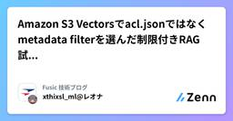

Fusic 技術ブログのフィード
https://zenn.dev/p/fusic
さまざまな個性を受け入れて有機的につなぐ社内環境を整える。あらゆる事業機会の創出と実現を繰り返し、世の中に対する視点を絶えず増やして成長していく。あっと驚くような角度から発展できるポイントを見つけ、そこにいい感じにフィットする形でテクノロジーを組み込んで、世の中をちょっとずつ、時
フィード

Amazon S3 Vectorsでacl.jsonではなくmetadata filterを選んだ制限付きRAG試してみた
Fusic 技術ブログのフィード
はじめにFusicのレオナです。2025年12月にGAされ、Amazon Bedrock Knowledge BasesのベクトルストアとしてS3 Vectorsを使えるようになりました。本ブログでは、Amazon S3 VectorsとAmazon Bedrock Knowledge Basesを使って、Amazon Cognitoのグループごとに検索できるドキュメントを制限するRAGを作ってみます。Amazon S3 Vectors自体については以前にブログを書いているので、先にそちらをご覧ください。https://zenn.dev/fusic/articles/14a...
8日前

【セキュリティ対応】複数サブシステムで構成されるPythonプロジェクト(with AWS SAM)におけるパッケージ管理の改善
Fusic 技術ブログのフィード
昨今のサプライチェーン攻撃の多発を受けて、Pythonプロジェクトでパッケージ管理の見直しを行いました。Pythonのパッケージ管理、ベスプラが分からない！と個人的に感じています。Node.jsならpnpmが良いのかな、とかnpm/yarn/pnpm/bunの比較が分かりやすい…と思ったり。一方でPythonはpip、pipenv、poetry、uv、condaと選択肢が多い上にそれぞれの役割用途・できることが絶妙にまとまりがなくて併用もできてしまう。そしてPythonという言語を選択する理由がさまざまであるからこそ、これぞベスプラという情報が生まれにくいのかもしれません。（勉強不...
10日前
SageMaker Real-time Endpointを別VPCからAWS PrivateLink経由でプライベートに呼び出してみた
Fusic 技術ブログのフィード
はじめにFusicのレオナです。本ブログでは、KaggleのHousing Prices Datasetを使って推論モデルをSageMaker Real-time Endpointにデプロイし、SageMaker EndpointのモデルコンテナENIを配置したVPCとは別のVPCから、SageMaker Runtime用のVPC Endpointを経由して推論してみました。環境構築はTerraformで行うハンズオン形式です。!※ 本ブログの目的は、呼び出し元VPCからSageMaker Runtime APIへのプライベートな推論経路を成立させることです。モデルの精度向上...
12日前
Qwen3-30Bを動かし、社内LANにOpenAI互換APIとしてvLLMで公開してみた
Fusic 技術ブログのフィード
はじめにFusicのレオナです。24GBのGPU 1枚で30Bクラスのモデルを動かし、別マシンからOpenAI互換APIとして叩けるところまでを通しで試してみました。本ブログでは、QuixiAI/Qwen3-30B-A3B-AWQ を vLLM でサーブし、LAN内の別端末から疎通確認するまでをステップバイステップで進めます。途中、AWQモデル選定や uv 環境構築でいくつか踏んだ落とし穴があったので、そこも合わせて共有します。 使用する技術の概要vLLM: LLMの高速推論サーバ。OpenAI互換APIを提供Qwen3-30B-A3B: Alibabaが公開した...
17日前
Claude Platform on AWS 試してみた
Fusic 技術ブログのフィード
はじめにFusicのレオナです。2026年5月、Claude Platform on AWSがGAされました。AWSアカウント上でAnthropic本家のClaude APIを呼び出せるサービスです。今回は全機能を紹介するのではなく、Claude Platform on AWSで作成したワークスペース経由で claude-sonnet-4-6 を呼び出すところまでを試してみます。 Claude Platform on AWSとはClaude Platform on AWSは、Anthropic本家のClaude Platform（Messages API、Agent Ski...
18日前
Claude CoworkをAmazon Bedrock 経由で使ってみた
Fusic 技術ブログのフィード
はじめにFusicのレオナです。Anthropicのデスクトップアプリ「Claude Desktop」で、推論バックエンドに Amazon Bedrock を利用できる Claude Cowork in Amazon Bedrock が発表されました。Claude Code がエンジニア向けのCLIツールであるのに対し、Claude Cowork はチャットUIベースで非エンジニアでも扱いやすいデスクトップアプリです。本ブログではClaude DesktopからAmazon Bedrockを推論バックエンドに設定する手順を試してみます。 Amazon Bedrock とは...
25日前
Claude Code on Amazon Bedrock 試してみた
Fusic 技術ブログのフィード
はじめにFusicのレオナです。Claude Codeは通常Anthropic APIキー(or サブスク形式)で利用しますが、Amazon Bedrock経由でも利用できます。Amazon Bedrock経由にすると、AWSの認証情報をそのまま使え、利用料もAWSの請求に統合できます。本ブログは、専用のIAMユーザーとAWS CLIプロファイルを作成し、Claude CodeをAmazon Bedrock経由で動かす手順を試してみます。 Amazon BedrockとはAmazon Bedrockは、AWSが提供するフルマネージドな生成AIサービスです。Anthropic...
25日前
EC2でLLM推論のコールドスタートをどこまで短縮できるか検証してみた
Fusic 技術ブログのフィード
はじめにFusicのレオナです。GPU付きEC2でLLMを推論する際、インスタンス起動後にHugging Faceからモデルをダウンロードする構成はよくあります。しかし、モデルサイズが大きくなるにつれて、このダウンロード時間がコールドスタートのボトルネックになります。今回は、EC2単体の構成で、モデルの取得元・配置方法を変えることで、どの程度コールドスタートを高速化できるかを実測してみました。!他にも検証方法はあります。今回は一例になります 仮説モデルをあらかじめAmazon S3やEBSに配置しておけば、インスタンス起動後にHugging Faceから外部インターネ...
1ヶ月前
マルチアカウント運用をしているプロジェクトのCDKのバージョンアップの際にValidationErrorが出た時の対応メモ
Fusic 技術ブログのフィード
課題aws-cdk 2.118.0↓aws-cdk 2.221.1aws-cdk-lib 2.118.0↓aws-cdk-lib 2.221.1への更新の際にValidationError: Cannot use resource '...' in a cross-environment fashion, the resource's physical name must be explicit set or use PhysicalName.GENERATE_IF_NEEDED が発生synthのタイミングでエラーが発生する 原因(推測)おそらく、2.22...
1ヶ月前
SageMaker Training Jobを使う理由を整理しつつ、Terraformで試してみた
Fusic 技術ブログのフィード
はじめにFusicのレオナです。本ブログでは、KaggleのDigit RecognizerコンペのMNISTデータセットを使用して、Terraformでインフラを構築してSageMaker Training Jobを動かすまでをハンズオン形式で書いていきます。!※ 本ブログの目的はSageMaker Training Jobの実行基盤の構築と動作確認です。モデルの精度向上、MLモデルの選定、学習結果の考察については扱いません。学習スクリプトのCNNはあくまでTraining Jobを動かすためのサンプルです。 SageMaker Training Job とはSage...
2ヶ月前
【Dify】Outlook返信をAIが自動生成し、承認すれば送信するフローをつくってみた
Fusic 技術ブログのフィード
はじめにお疲れ様です。大宮です🫡💪🙇最近、Difyの新機能(HITL)が追加されたみたいです。これによって、AIワークフローの中に「人間の承認」を挟むことができるようになりました。（AIが操作を行う前に、人間に「この操作を実行して良いですか？」を聞いてくれる機能）重要な操作をAIに行わせる直前などに挟むことで、意図しない事故を防ぐことができるようになりますね。今回は、業務の中でも実用できそうなユースケースを想定してアプリ構築してみたので、紹介します。どんなものなのかざっくり説明すると,AI がメールを受信するまで監視してくれて、AI が自動で返信を考えくれて、AI...
2ヶ月前
Kiroの仕様駆動開発を2案件回して辿り着いた運用設計
Fusic 技術ブログのフィード
はじめにこの記事では、Kiroの仕様駆動開発を実案件で運用する中で、specの周辺に構築した運用設計について書きます。Kiroで案件を回すのはこれが2回目で、1回目の経験で感じた課題（specの肥大化、全体像の見えにくさ、レビュー負荷）を踏まえて今の形に落ち着きました。具体的には以下の3つです。steering: specをヒューマンライクに寄せる、docs/requirementsに全体像を残し続けるhooks: 自動チェック・手動レビュー・steeringに定義したspec処理の自動化docs/: specから派生する「人間向けドキュメント」の運用specの書...
2ヶ月前
Upstage Classifyでドキュメント分類してみた
Fusic 技術ブログのフィード
はじめにFusicのレオナです。本ブログでは、Upstage Classify（Document Classification API）を使って、PDF・文書画像を事前に定義したカテゴリに自動分類できるかを検証しました。 Upstage ClassifyとはUpstage Classifyはドキュメントをユーザー定義のカテゴリに分類します。JPEG / PNG / BMP / PDF / TIFF / HEIC / DOCX / PPTX / XLSX 等に対応してます。OpenAI SDK互換で利用でき、base_urlを指定して client.chat.completio...
3ヶ月前
ML モデル実装に Strategy パターンを導入してみた
Fusic 技術ブログのフィード
はじめにFusicのレオナです。大学では機械学習・深層学習のモデル開発に取り組んでおり、入社後は新卒研修でソフトウェア開発を学んだあと、機械学習モデル開発案件に携わりました。その中で強く感じたのが、精度改善そのものだけでなく、比較しやすい実装にしておくことの大切さです。機械学習の開発では、PoCや初期検証の段階で複数のモデルを並行して試すことがよくあります。たとえば、RandomForest、LightGBM、ニューラルネットワークのように異なるモデルを切り替えながら、精度や学習コスト、実装のしやすさを見比べていきます。最初のうちは if/elif で切り替える実装でも十分...
3ヶ月前
植物のお水をやるタイミングを教えてくれる「水やり番長」を作った😎
Fusic 技術ブログのフィード
弊社のオフィスには観葉植物がいっぱいあります。数年に一度しか咲かなかったはずなのに2年連続同じ日にお花を咲かせるサービス精神旺盛なドラセナ・マッサンゲアナ氏植物、お水をあげないと元気がなくなるし、お水をあげすぎると根腐れしてしまいます。みんなで手分けしてお水をあげていましたが、お水をあげ忘れたり、逆にあげすぎたりするリスクがありました。そこで、土壌の水分を計測して、土が乾いてきたらSlackに通知する「水やり番長😎」を作りました。!開発合宿Vol.23で作りました！感謝のテックブログ🙏 構成水やり番長の構成図。こだわりポイントはLambdaを使わなかったことRas...
3ヶ月前
Snowflakeではじめる機械学習ハンズオン
Fusic 技術ブログのフィード
はじめにFusicのレオナです。本ブログではSnowflakeを使って、機械学習モデル構築をハンズオン形式で試してみました。Kaggle の House Prices - Advanced Regression Techniques データセットを使い、CSVデータの取り込みから特徴量エンジニアリング、モデル学習、Model Registry への登録、テストデータ推論までの一連の流れを実装しています。使用する技術:役割技術データ基盤Snowflakeデータ前処理・特徴量エンジニアリングSQLモデル学習・評価scikit-learn（ローカ...
4ヶ月前
Amazon BedrockでStructured Outputs試してみた
Fusic 技術ブログのフィード
はじめにFusicのレオナです。今回は2026年2月にAmazon BedrockにStructured Outputsが追加されたので試してみます。 Structured Outputsとは基盤モデルからの応答を、ユーザー定義のJSONスキーマに厳密に準拠させることが可能になりました。従来のプロンプトベースのアプローチでは、モデルにユーザーの望むJSON形式で出力させることが不確実であり、バリデーション処理などの工夫が必要でした。Structured Outputsはこの問題を解決してくれます。https://aws.amazon.com/jp/about-aws/wh...
4ヶ月前
IoT向け一体型基板『MicroCat.1』を使ってSORACOMと通信するまで
Fusic 技術ブログのフィード
MicroCat.1は メカトラックス株式会社 が販売しているMicroPython搭載LTE Cat.1 bis通信モジュール一体基板です。2025年11月に開催された展示会「EdgeTech+2025」にて発表され、その後2025年12月12日からプレリリース版の販売が始まっています。https://store.mechatrax.com/product.php?id=84!台数限定販売となっていますが、執筆時点では「在庫: 27」となっています。LTE通信モジュールを搭載した基板が5000円で購入できる機会はなかなかないので、IoTに興味のある方はこれを機に購入してみてはい...
4ヶ月前
モデリングとは、対象を開発者にとって都合よく切り取ることだと思った
Fusic 技術ブログのフィード
こんにちは！miyamyia(←これはtypoですが、みやみやと読みます。typoが正。) です。この記事では、研修中にモデリングの核心を掴んだかもしれないという話をします。思い出せ あの時掴んだ 呪力の核心を!!! - 『呪術廻戦』(芥見下々)!最近呪術廻戦を読みました。 やっていること現在、研修課題としてPHPでCLIベースのブラックジャックアプリケーションを作成しています。今回は、その中で スコア計算ロジック を考えていた時の話です。ブラックジャックのスコア計算はこのようなルールに基づいています。2~10 はカードの数字がそのままスコアになるJ、Q、K...
4ヶ月前
テストで開発者を駆動する
Fusic 技術ブログのフィード
2026年1月より株式会社 Fusic にジョインした miyamyia(←これはtypoですが、みやみやと読みます。typoが正。) です。早速ですが、私は前職で、もしくは休日にこんな経験をすることがありました。朝起きるとなんだか嫌な予感がする。いつもより目が霞んでいて、ベッドから出たくない。そんな体を起こして、デスクに座る。いつもの通りやるべきことを思い出して、コードを書く。...思い出せない。何をやるべきなんだっけ。思い出した後も、コードを書く手が止まる。やるべきことは思い出したのに、どこから手をつけたらいいかわからない。嫌な予感が的中する。今日は集中できない、モチベーシ...
4ヶ月前